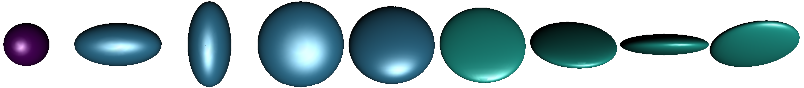

Symmetric positive definite matrices
Manifolds.SymmetricPositiveDefinite — Type
SymmetricPositiveDefinite{T} <: AbstractDecoratorManifold{ℝ}The manifold of symmetric positive definite matrices, i.e.
\[\mathcal P(n) = \bigl\{ p ∈ ℝ^{n×n}\ \big|\ a^\mathrm{T}pa > 0 \text{ for all } a ∈ ℝ^{n}\backslash\{0\} \bigr\}\]
The tangent space at $T_p\mathcal P(n)$ reads
\[ T_p\mathcal P(n) = \bigl\{ X \in \mathbb R^{n×n} \big|\ X=X^\mathrm{T} \bigr\},\]
i.e. the set of symmetric matrices,
Constructor
SymmetricPositiveDefinite(n; parameter::Symbol=:type)generates the manifold $\mathcal P(n) \subset ℝ^{n×n}$
This manifold can – for example – be illustrated as ellipsoids: since the eigenvalues are all positive they can be taken as lengths of the axes of an ellipsoids while the directions are given by the eigenvectors.

The manifold can be equipped with different metrics
Common and metric independent functions
Base.convert — Method
convert(::Type{AbstractMatrix}, p::SPDPoint)return the point p as a matrix. The matrix is either stored within the SPDPoint or reconstructed from p.eigen.
Base.rand — Method
rand(M::SymmetricPositiveDefinite; σ::Real=1)Generate a random symmetric positive definite matrix on the SymmetricPositiveDefinite manifold M.
ManifoldsBase.check_point — Method
check_point(M::SymmetricPositiveDefinite, p; kwargs...)checks, whether p is a valid point on the SymmetricPositiveDefinite M, i.e. is a matrix of size (N,N), symmetric and positive definite. The tolerance for the second to last test can be set using the kwargs....
ManifoldsBase.check_vector — Method
check_vector(M::SymmetricPositiveDefinite, p, X; kwargs... )Check whether X is a tangent vector to p on the SymmetricPositiveDefinite M. After check_point(M,p), X has to be of the same dimension as p and a symmetric matrix, i.e. this stores tangent vectors as elements of the corresponding Lie group. The tolerance for the last test can be set using the kwargs....
ManifoldsBase.injectivity_radius — Method
injectivity_radius(M::SymmetricPositiveDefinite[, p])
injectivity_radius(M::MetricManifold{SymmetricPositiveDefinite,AffineInvariantMetric}[, p])
injectivity_radius(M::MetricManifold{SymmetricPositiveDefinite,LogCholeskyMetric}[, p])Return the injectivity radius of the SymmetricPositiveDefinite. Since M is a Hadamard manifold with respect to the AffineInvariantMetric and the LogCholeskyMetric, the injectivity radius is globally $∞$.
ManifoldsBase.is_flat — Method
is_flat(::SymmetricPositiveDefinite)Return false. SymmetricPositiveDefinite is not a flat manifold.
ManifoldsBase.manifold_dimension — Method
manifold_dimension(M::SymmetricPositiveDefinite)returns the dimension of SymmetricPositiveDefinite M $=\mathcal P(n), n ∈ ℕ$, i.e.
\[\dim \mathcal P(n) = \frac{n(n+1)}{2}.\]
ManifoldsBase.project — Method
project(M::SymmetricPositiveDefinite, p, X)project a matrix from the embedding onto the tangent space $T_p\mathcal P(n)$ of the SymmetricPositiveDefinite matrices, i.e. the set of symmetric matrices.
ManifoldsBase.representation_size — Method
representation_size(M::SymmetricPositiveDefinite)Return the size of an array representing an element on the SymmetricPositiveDefinite manifold M, i.e. $n×n$, the size of such a symmetric positive definite matrix on $\mathcal M = \mathcal P(n)$.
ManifoldsBase.zero_vector — Method
zero_vector(M::SymmetricPositiveDefinite, p)returns the zero tangent vector in the tangent space of the symmetric positive definite matrix p on the SymmetricPositiveDefinite manifold M.
Default metric: the affine invariant metric
Manifolds.AffineInvariantMetric — Type
AffineInvariantMetric <: AbstractMetricThe linear affine metric is the metric for symmetric positive definite matrices, that employs matrix logarithms and exponentials, which yields a linear and affine metric.
This metric is also the default metric, i.e. any call of the following functions with P=SymmetricPositiveDefinite(3) will result in MetricManifold(P,AffineInvariantMetric())and hence yield the formulae described in this section.
Base.exp — Method
exp(M::SymmetricPositiveDefinite, p, X)
exp(M::MetricManifold{<:SymmetricPositiveDefinite,AffineInvariantMetric}, p, X)Compute the exponential map from p with tangent vector X on the SymmetricPositiveDefinite M with its default MetricManifold having the AffineInvariantMetric. The formula reads
\[\exp_p X = p^{\frac{1}{2}}\operatorname{Exp}(p^{-\frac{1}{2}} X p^{-\frac{1}{2}})p^{\frac{1}{2}},\]
where $\operatorname{Exp}$ denotes to the matrix exponential.
Base.log — Method
log(M::SymmetricPositiveDefinite, p, q)
log(M::MetricManifold{SymmetricPositiveDefinite,AffineInvariantMetric}, p, q)Compute the logarithmic map from p to q on the SymmetricPositiveDefinite as a MetricManifold with AffineInvariantMetric. The formula reads
\[\log_p q = p^{\frac{1}{2}}\operatorname{Log}(p^{-\frac{1}{2}}qp^{-\frac{1}{2}})p^{\frac{1}{2}},\]
where $\operatorname{Log}$ denotes to the matrix logarithm.
ManifoldDiff.riemannian_Hessian — Method
riemannian_Hessian(M::SymmetricPositiveDefinite, p, G, H, X)The Riemannian Hessian can be computed as stated in Eq. (7.3) [Ngu23]. Let $\nabla f(p)$ denote the Euclidean gradient G, $\nabla^2 f(p)[X]$ the Euclidean Hessian H, and $\operatorname{sym}(X) = \frac{1}{2}\bigl(X^{\mathrm{T}}+X\bigr)$ the symmetrization operator. Then the formula reads
\[ \operatorname{Hess}f(p)[X] = p\operatorname{sym}(∇^2 f(p)[X])p + \operatorname{sym}\bigl( X\operatorname{sym}\bigl(∇ f(p)\bigr)p)\]
Manifolds.manifold_volume — Method
manifold_volume(::SymmetricPositiveDefinite)Return volume of the SymmetricPositiveDefinite manifold, i.e. infinity.
Manifolds.volume_density — Method
volume_density(::SymmetricPositiveDefinite, p, X)Compute the volume density of the SymmetricPositiveDefinite manifold at p in direction X. See [CKA17], Section 6.2 for details. Note that metric in Manifolds.jl has a different scaling factor than the reference.
ManifoldsBase.change_metric — Method
change_metric(M::SymmetricPositiveDefinite, E::EuclideanMetric, p, X)Given a tangent vector $X ∈ T_p\mathcal P(n)$ with respect to the EuclideanMetric g_E, this function changes into the AffineInvariantMetric (default) metric on the SymmetricPositiveDefinite M.
To be precise we are looking for $c\colon T_p\mathcal P(n) → T_p\mathcal P(n)$ such that for all $Y,Z ∈ T_p\mathcal P(n)$ it holds
\[⟨Y,Z⟩ = \operatorname{tr}(YZ) = \operatorname{tr}(p^{-1}c(Y)p^{-1}c(Z)) = g_p(c(Z),c(Y))\]
and hence $c(X) = pX$ is computed.
ManifoldsBase.change_representer — Method
change_representer(M::SymmetricPositiveDefinite, E::EuclideanMetric, p, X)Compute the representer of the linear function given by $X ∈ T_p\mathcal M$ with respect to the (default) AffineInvariantMetric on the SymmetricPositiveDefinite M. Here X represents the linear function on the tangent space at p with respect to the EuclideanMetric g_E.
To be precise we are looking for $Z∈T_p\mathcal P(n)$ such that for all $Y∈T_p\mathcal P(n)$ it holds
\[⟨X,Y⟩ = \operatorname{tr}(XY) = \operatorname{tr}(p^{-1}Zp^{-1}Y) = g_p(Z,Y)\]
and hence $Z = pXp$.
ManifoldsBase.distance — Method
distance(M::SymmetricPositiveDefinite, p, q)
distance(M::MetricManifold{SymmetricPositiveDefinite,AffineInvariantMetric}, p, q)Compute the distance on the SymmetricPositiveDefinite manifold between p and q, as a MetricManifold with AffineInvariantMetric. The formula reads
\[d_{\mathcal P(n)}(p,q) = \lVert \operatorname{Log}(p^{-\frac{1}{2}}qp^{-\frac{1}{2}})\rVert_{\mathrm{F}}.,\]
where $\operatorname{Log}$ denotes the matrix logarithm and $\lVert⋅\rVert_{\mathrm{F}}$ denotes the matrix Frobenius norm.
ManifoldsBase.get_basis — Method
[Ξ,κ] = get_basis(M::SymmetricPositiveDefinite, p, B::DefaultOrthonormalBasis)
[Ξ,κ] = get_basis(M::MetricManifold{<:SymmetricPositiveDefinite,AffineInvariantMetric}, p, B::DefaultOrthonormalBasis)Return a default ONB for the tangent space $T_p\mathcal P(n)$ of the SymmetricPositiveDefinite with respect to the AffineInvariantMetric.
\[ g_p(X,Y) = \operatorname{tr}(p^{-1} X p^{-1} Y),\]
The basis constructed here is based on the ONB for symmetric matrices constructed as follows. Let
\[\Delta_{i,j} = (a_{k,l})_{k,l=1}^n \quad \text{ with } a_{k,l} = \begin{cases} 1 & \mbox{ for } k=l \text{ if } i=j\\ \frac{1}{\sqrt{2}} & \mbox{ for } k=i, l=j \text{ or } k=j, l=i\\ 0 & \text{ else.} \end{cases}\]
which forms an ONB for the space of symmetric matrices.
We then form the ONB by
\[ \Xi_{i,j} = p^{\frac{1}{2}}\Delta_{i,j}p^{\frac{1}{2}},\qquad i=1,\ldots,n, j=i,\ldots,n.\]
ManifoldsBase.get_basis_diagonalizing — Method
[Ξ,κ] = get_basis_diagonalizing(M::SymmetricPositiveDefinite, p, B::DiagonalizingOrthonormalBasis)
[Ξ,κ] = get_basis_diagonalizing(M::MetricManifold{<:SymmetricPositiveDefinite,AffineInvariantMetric}, p, B::DiagonalizingOrthonormalBasis)Return an orthonormal basis Ξ of the tangent space at p that diagonalizes the curvature tensor $R(u,v)w$, together with its eigenvalues κ. The basis is a vector of tangent vectors (of length manifold_dimension of M) on the MetricManifold of the SymmetricPositiveDefinite manifold M with AffineInvariantMetric, and the direction B.frame_direction $V$ has curvature 0.
The construction is based on an ONB for the symmetric matrices similar to get_basis(::SymmetricPositiveDefinite, p, ::DefaultOrthonormalBasis just that the ONB here is build from the eigen vectors of $p^{\frac{1}{2}}Vp^{\frac{1}{2}}$.
ManifoldsBase.get_coordinates — Method
get_coordinates(::SymmetricPositiveDefinite, p, X, ::DefaultOrthonormalBasis)Using the basis from get_basis the coordinates with respect to this ONB can be simplified to
\[ c_k = \mathrm{tr}(p^{-\frac{1}{2}}\Delta_{i,j} X)\]
where $k$ is the linearized index of the $i=1,\ldots,n, j=i,\ldots,n$.
ManifoldsBase.get_vector — Method
get_vector(::SymmetricPositiveDefinite, p, c, ::DefaultOrthonormalBasis)Using the basis from get_basis the vector reconstruction with respect to this ONB can be simplified to
\[ X = p^{\frac{1}{2}} \Biggl( \sum_{i=1,j=i}^n c_k \Delta_{i,j} \Biggr) p^{\frac{1}{2}}\]
where $k$ is the linearized index of the $i=1,\ldots,n, j=i,\ldots,n$.
ManifoldsBase.inner — Method
inner(M::SymmetricPositiveDefinite, p, X, Y)
inner(M::MetricManifold{SymmetricPositiveDefinite,AffineInvariantMetric}, p, X, Y)Compute the inner product of X, Y in the tangent space of p on the SymmetricPositiveDefinite manifold M, as a MetricManifold with AffineInvariantMetric. The formula reads
\[g_p(X,Y) = \operatorname{tr}(p^{-1} X p^{-1} Y),\]
ManifoldsBase.is_flat — Method
is_flat(::MetricManifold{ℝ,<:SymmetricPositiveDefinite,AffineInvariantMetric})Return false. SymmetricPositiveDefinite with AffineInvariantMetric is not a flat manifold.
ManifoldsBase.parallel_transport_to — Method
parallel_transport_to(M::SymmetricPositiveDefinite, p, X, q)
parallel_transport_to(M::MetricManifold{SymmetricPositiveDefinite,AffineInvariantMetric}, p, X, y)Compute the parallel transport of X from the tangent space at p to the tangent space at q on the SymmetricPositiveDefinite as a MetricManifold with the AffineInvariantMetric. The formula reads
\[\mathcal P_{q←p}X = p^{\frac{1}{2}} \operatorname{Exp}\bigl( \frac{1}{2}p^{-\frac{1}{2}}\log_p(q)p^{-\frac{1}{2}} \bigr) p^{-\frac{1}{2}}X p^{-\frac{1}{2}} \operatorname{Exp}\bigl( \frac{1}{2}p^{-\frac{1}{2}}\log_p(q)p^{-\frac{1}{2}} \bigr) p^{\frac{1}{2}},\]
where $\operatorname{Exp}$ denotes the matrix exponential and log the logarithmic map on SymmetricPositiveDefinite (again with respect to the AffineInvariantMetric).
ManifoldsBase.riemann_tensor — Method
riemann_tensor(::SymmetricPositiveDefinite, p, X, Y, Z)Compute the value of Riemann tensor on the SymmetricPositiveDefinite manifold. The formula reads [Ren11] $R(X,Y)Z=p^{1/2}R(X_I, Y_I)Z_Ip^{1/2}$, where $R_I(X_I, Y_I)Z_I=\frac{1}{4}[Z_I, [X_I, Y_I]]$, $X_I=p^{-1/2}Xp^{-1/2}$, $Y_I=p^{-1/2}Yp^{-1/2}$ and $Z_I=p^{-1/2}Zp^{-1/2}$.
ManifoldsBase.sectional_curvature_max — Method
sectional_curvature_max(M::SymmetricPositiveDefinite)Return minimum sectional curvature of SymmetricPositiveDefinite manifold, that is 0.
ManifoldsBase.sectional_curvature_min — Method
sectional_curvature_min(M::SymmetricPositiveDefinite)Return minimum sectional curvature of SymmetricPositiveDefinite manifold, that is 0 for SPD(1) and SPD(2) and -0.25 otherwise.
Bures-Wasserstein metric
Manifolds.BuresWassersteinMetric — Type
BurresWassertseinMetric <: AbstractMetricThe Bures Wasserstein metric for symmetric positive definite matrices [MMP18]
Base.exp — Method
exp(::MetricManifold{ℝ,SymmetricPositiveDefinite,BuresWassersteinMetric}, p, X)Compute the exponential map on SymmetricPositiveDefinite with respect to the BuresWassersteinMetric given by
\[ \exp_p(X) = p+X+L_p(X)pL_p(X)\]
where $q=L_p(X)$ denotes the Lyapunov operator, i.e. it solves $pq + qp = X$.
Base.log — Method
log(::MetricManifold{SymmetricPositiveDefinite,BuresWassersteinMetric}, p, q)Compute the logarithmic map on SymmetricPositiveDefinite with respect to the BuresWassersteinMetric given by
\[ \log_p(q) = (pq)^{\frac{1}{2}} + (qp)^{\frac{1}{2}} - 2 p\]
where $q=L_p(X)$ denotes the Lyapunov operator, i.e. it solves $pq + qp = X$.
ManifoldsBase.change_representer — Method
change_representer(M::MetricManifold{ℝ,<:SymmetricPositiveDefinite,BuresWassersteinMetric}, E::EuclideanMetric, p, X)Compute the representer of the linear function given by $X ∈ T_p\mathcal M$ with respect to the BuresWassersteinMetric on the SymmetricPositiveDefinite M. Here X represents the linear function on the tangent space at p with respect to the EuclideanMetric g_E.
To be precise we are looking for $Z∈T_p\mathcal P(n)$ such that for all $Y∈T_p\mathcal P(n)$ it holds
\[⟨X,Y⟩ = \operatorname{tr}(XY) = ⟨Z,Y⟩_{\mathrm{BW}}\]
for all $Y$ and hence we get $Z$= 2(A+A^{\mathrm{T}})$with$A=Xp``.
ManifoldsBase.distance — Method
distance(::MetricManifold{SymmetricPositiveDefinite,BuresWassersteinMetric}, p, q)Compute the distance with respect to the BuresWassersteinMetric on SymmetricPositiveDefinite matrices, i.e.
\[d(p,q) = \operatorname{tr}(p) + \operatorname{tr}(q) - 2\operatorname{tr}\Bigl( (p^{\frac{1}{2}}qp^{\frac{1}{2}} \bigr)^\frac{1}{2} \Bigr),\]
where the last trace can be simplified (by rotating the matrix products in the trace) to $\operatorname{tr}(pq)$.
ManifoldsBase.inner — Method
inner(::MetricManifold{ℝ,SymmetricPositiveDefinite,BuresWassersteinMetric}, p, X, Y)Compute the inner product SymmetricPositiveDefinite with respect to the BuresWassersteinMetric given by
\[ ⟨X,Y⟩ = \frac{1}{2}\operatorname{tr}(L_p(X)Y)\]
where $q=L_p(X)$ denotes the Lyapunov operator, i.e. it solves $pq + qp = X$.
ManifoldsBase.is_flat — Method
is_flat(::MetricManifold{ℝ,<:SymmetricPositiveDefinite,BuresWassersteinMetric})Return false. SymmetricPositiveDefinite with BuresWassersteinMetric is not a flat manifold.
Generalized Bures-Wasserstein metric
Manifolds.GeneralizedBuresWassersteinMetric — Type
GeneralizedBurresWassertseinMetric{T<:AbstractMatrix} <: AbstractMetricThe generalized Bures Wasserstein metric for symmetric positive definite matrices, see [HMJG21].
This metric internally stores the symmetric positive definite matrix $M$ to generalise the metric, where the name also follows the mentioned preprint.
Base.exp — Method
exp(::MetricManifold{ℝ,<:SymmetricPositiveDefinite,<:GeneralizedBuresWassersteinMetric}, p, X)Compute the exponential map on SymmetricPositiveDefinite with respect to the GeneralizedBuresWassersteinMetric given by
\[ \exp_p(X) = p+X+\mathcal ML_{p,M}(X)pML_{p,M}(X)\]
where $q=L_{M,p}(X)$ denotes the generalized Lyapunov operator, i.e. it solves $pqM + Mqp = X$.
Base.log — Method
log(::MetricManifold{ℝ,<:SymmetricPositiveDefinite,<:GeneralizedBuresWassersteinMetric}, p, q)Compute the logarithmic map on SymmetricPositiveDefinite with respect to the BuresWassersteinMetric given by
\[ \log_p(q) = M(M^{-1}pM^{-1}q)^{\frac{1}{2}} + (qM^{-1}pM^{-1})^{\frac{1}{2}}M - 2 p.\]
ManifoldsBase.change_representer — Method
change_representer(M::MetricManifold{ℝ,<:SymmetricPositiveDefinite,<:GeneralizedBuresWassersteinMetric}, E::EuclideanMetric, p, X)Compute the representer of the linear function given by $X ∈ T_p\mathcal M$ with respect to the GeneralizedBuresWassersteinMetric on the SymmetricPositiveDefinite M. Here X represents the linear function on the tangent space at p with respect to the EuclideanMetric g_E.
To be precise we are looking for $Z∈T_p\mathcal P(n)$ such that for all $Y∈T_p\mathcal P(n)$ it holds
\[⟨X,Y⟩ = \operatorname{tr}(XY) = ⟨Z,Y⟩_{\mathrm{BW}}\]
for all $Y$ and hence we get $Z = 2pXM + 2MXp$.
ManifoldsBase.distance — Method
distance(::MetricManifold{SymmetricPositiveDefinite,GeneralizedBuresWassersteinMetric}, p, q)Compute the distance with respect to the BuresWassersteinMetric on SymmetricPositiveDefinite matrices, i.e.
\[d(p,q) = \operatorname{tr}(M^{-1}p) + \operatorname{tr}(M^{-1}q) - 2\operatorname{tr}\bigl( (p^{\frac{1}{2}}M^{-1}qM^{-1}p^{\frac{1}{2}} \bigr)^{\frac{1}{2}},\]
ManifoldsBase.inner — Method
inner(::MetricManifold{ℝ,<:SymmetricPositiveDefinite,<:GeneralizedBuresWassersteinMetric}, p, X, Y)Compute the inner product SymmetricPositiveDefinite with respect to the GeneralizedBuresWassersteinMetric given by
\[ ⟨X,Y⟩ = \frac{1}{2}\operatorname{tr}(L_{p,M}(X)Y)\]
where $q=L_{M,p}(X)$ denotes the generalized Lyapunov operator, i.e. it solves $pqM + Mqp = X$.
ManifoldsBase.is_flat — Method
is_flat(::MetricManifold{ℝ,<:SymmetricPositiveDefinite,<:GeneralizedBuresWassersteinMetric})Return false. SymmetricPositiveDefinite with GeneralizedBuresWassersteinMetric is not a flat manifold.
Log-Euclidean metric
Manifolds.LogEuclideanMetric — Type
LogEuclideanMetric <: RiemannianMetricThe LogEuclidean Metric consists of the Euclidean metric applied to all elements after mapping them into the Lie Algebra, i.e. performing a matrix logarithm beforehand.
ManifoldsBase.distance — Method
distance(M::MetricManifold{ℝ,<:SymmetricPositiveDefinite,LogEuclideanMetric}, p, q)Compute the distance on the SymmetricPositiveDefinite manifold between p and q as a MetricManifold with LogEuclideanMetric. The formula reads
\[ d_{\mathcal P(n)}(p,q) = \lVert \operatorname{Log} p - \operatorname{Log} q \rVert_{\mathrm{F}}\]
where $\operatorname{Log}$ denotes the matrix logarithm and $\lVert⋅\rVert_{\mathrm{F}}$ denotes the matrix Frobenius norm.
ManifoldsBase.is_flat — Method
is_flat(::MetricManifold{ℝ,<:SymmetricPositiveDefinite,LogEuclideanMetric})Return false. SymmetricPositiveDefinite with LogEuclideanMetric is not a flat manifold.
Log-Cholesky metric
Manifolds.LogCholeskyMetric — Type
LogCholeskyMetric <: RiemannianMetricThe Log-Cholesky metric imposes a metric based on the Cholesky decomposition as introduced by [Lin19].
Base.exp — Method
exp(M::MetricManifold{SymmetricPositiveDefinite,LogCholeskyMetric}, p, X)Compute the exponential map on the SymmetricPositiveDefinite M with LogCholeskyMetric from p into direction X. The formula reads
\[\exp_p X = (\exp_y W)(\exp_y W)^\mathrm{T}\]
where $\exp_xW$ is the exponential map on CholeskySpace, $y$ is the Cholesky decomposition of $p$, $W = y(y^{-1}Xy^{-\mathrm{T}})_\frac{1}{2}$, and $(⋅)_\frac{1}{2}$ denotes the lower triangular matrix with the diagonal multiplied by $\frac{1}{2}$.
Base.log — Method
log(M::MetricManifold{ℝ,<:SymmetricPositiveDefinite,LogCholeskyMetric}, p, q)Compute the logarithmic map on SymmetricPositiveDefinite M with respect to the LogCholeskyMetric emanating from p to q. The formula can be adapted from the CholeskySpace as
\[\log_p q = xW^{\mathrm{T}} + Wx^{\mathrm{T}},\]
where $x$ is the Cholesky factor of $p$ and $W=\log_x y$ for $y$ the Cholesky factor of $q$ and the just mentioned logarithmic map is the one on CholeskySpace.
ManifoldsBase.distance — Method
distance(M::MetricManifold{SymmetricPositiveDefinite,LogCholeskyMetric}, p, q)Compute the distance on the manifold of SymmetricPositiveDefinite nmatrices, i.e. between two symmetric positive definite matrices p and q with respect to the LogCholeskyMetric. The formula reads
\[d_{\mathcal P(n)}(p,q) = \sqrt{ \lVert ⌊ x ⌋ - ⌊ y ⌋ \rVert_{\mathrm{F}}^2 + \lVert \log(\operatorname{diag}(x)) - \log(\operatorname{diag}(y))\rVert_{\mathrm{F}}^2 }\ \ ,\]
where $x$ and $y$ are the Cholesky factors of $p$ and $q$, respectively, $⌊⋅⌋$ denbotes the strictly lower triangular matrix of its argument, and $\lVert⋅\rVert_{\mathrm{F}}$ the Frobenius norm.
ManifoldsBase.inner — Method
inner(M::MetricManifold{ℝ,<:SymmetricPositiveDefinite,LogCholeskyMetric}, p, X, Y)Compute the inner product of two matrices X, Y in the tangent space of p on the SymmetricPositiveDefinite manifold M, as a MetricManifold with LogCholeskyMetric. The formula reads
\[ g_p(X,Y) = ⟨a_z(X),a_z(Y)⟩_z,\]
where $⟨⋅,⋅⟩_x$ denotes inner product on the CholeskySpace, $z$ is the Cholesky factor of $p$, $a_z(W) = z (z^{-1}Wz^{-\mathrm{T}})_{\frac{1}{2}}$, and $(⋅)_\frac{1}{2}$ denotes the lower triangular matrix with the diagonal multiplied by $\frac{1}{2}$
ManifoldsBase.is_flat — Method
is_flat(::MetricManifold{ℝ,<:SymmetricPositiveDefinite,LogCholeskyMetric})Return true. SymmetricPositiveDefinite with LogCholeskyMetric is a flat manifold. See Proposition 8 of [Lin19].
ManifoldsBase.parallel_transport_to — Method
vector_transport_to(
M::MetricManifold{ℝ,<:SymmetricPositiveDefinite,LogCholeskyMetric},
p,
X,
q,
::ParallelTransport,
)Parallel transport the tangent vector X at p along the geodesic to q with respect to the SymmetricPositiveDefinite manifold M and LogCholeskyMetric. The parallel transport is based on the parallel transport on CholeskySpace: Let $x$ and $y$ denote the Cholesky factors of p and q, respectively and $W = x(x^{-1}Xx^{-\mathrm{T}})_\frac{1}{2}$, where $(⋅)_\frac{1}{2}$ denotes the lower triangular matrix with the diagonal multiplied by $\frac{1}{2}$. With $V$ the parallel transport on CholeskySpace from $x$ to $y$. The formula hear reads
\[\mathcal P_{q←p}X = yV^{\mathrm{T}} + Vy^{\mathrm{T}}.\]
Statistics
Statistics.mean — Method
mean(
M::SymmetricPositiveDefinite,
x::AbstractVector,
[w::AbstractWeights,]
method = GeodesicInterpolation();
kwargs...,
)Compute the Riemannian mean of x using GeodesicInterpolation.
Efficient representation
When a point p is used in several occasions, it might be beneficial to store the eigenvalues and vectors of p and optionally its square root and the inverse of the square root. The SPDPoint can be used for exactly that.
Manifolds.SPDPoint — Type
SPDPoint <: AbstractManifoldsPointStore the result of eigen(p) of an SPD matrix and (optionally) $p^{1/2}$ and $p^{-1/2}$ to avoid their repeated computations.
This result only has the result of eigen as a mandatory storage, the other three can be stored. If they are not stored they are computed and returned (but then still not stored) when required.
Constructor
SPDPoint(p::AbstractMatrix; store_p=true, store_sqrt=true, store_sqrt_inv=true)Create an SPD point using an symmetric positive defincite matrix p, where you can optionally store p, sqrt and sqrt_inv
and there are three internal functions to be able to use SPDPoint interchangeably with the default representation as a matrix.
Manifolds.spd_sqrt — Function
spd_sqrt(p::AbstractMatrix)
spd_sqrt(p::SPDPoint)return $p^{\frac{1}{2}}$ by either computing it (if it is missing or for the AbstractMatrix) or returning the stored value from within the SPDPoint.
This method assumes that p represents an spd matrix.
Manifolds.spd_sqrt_inv — Function
spd_sqrt_inv(p::SPDPoint)return $p^{-\frac{1}{2}}$ by either computing it (if it is missing or for the AbstractMatrix) or returning the stored value from within the SPDPoint.
This method assumes that p represents an spd matrix.
Manifolds.spd_sqrt_and_sqrt_inv — Function
spd_sqrt_and_sqrt_inv(p::AbstractMatrix)
spd_sqrt_and_sqrt_inv(p::SPDPoint)return $p^{\frac{1}{2}}$ and $p^{-\frac{1}{2}}$ by either computing them (if they are missing or for the AbstractMatrix) or returning their stored value from within the SPDPoint.
Compared to calling single methods spd_sqrt and spd_sqrt_inv this method only computes the eigenvectors once for the case of the AbstractMatrix or if both are missing.
This method assumes that p represents an spd matrix.